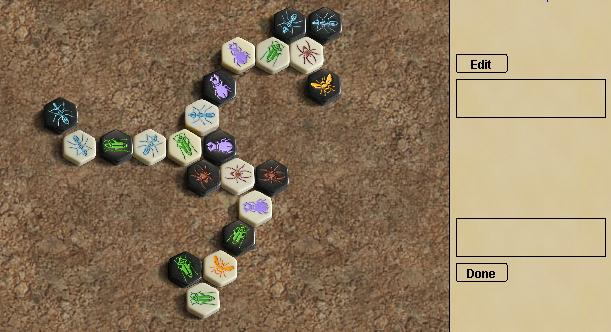
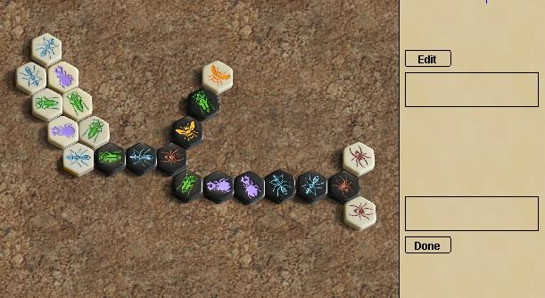
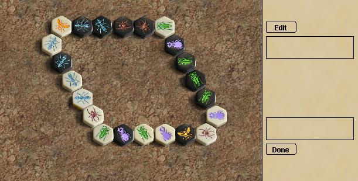
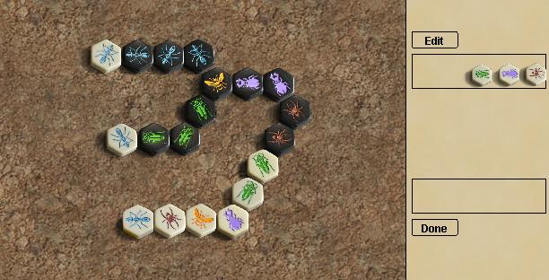
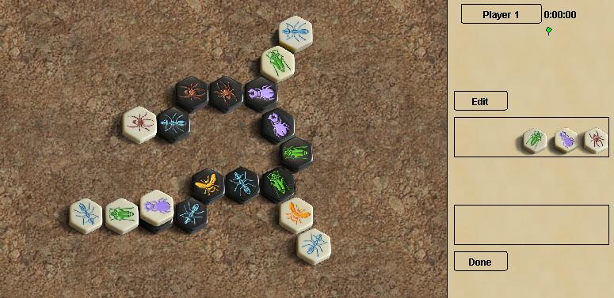
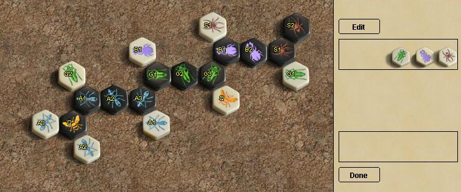

|
|
Исходный вариант, 131Это оригинальная комбинация, на которой сломался мой бот, она имеет 131 возможный ход для чёрных.Я догадывался, что в ней вероятно есть несколько простых улучшений, но в этом и заключался смысл: поставить задачу, которая может быть решена. Также стоит учитывать, что не я открыл эту комбинацию. |
 |
Rathstar 149Первым улучшением была комбинация, предложенная Аланом Эспинволлом, он разработал её не глядя на предыдущий вариант. Комбинация включает несколько искусных группировок чтобы увеличить подвижность кузнечиков и жуков. |
 |
Dyer 154
Основываясь на конструкции (нечестное преимущество), я добавил
собственный трюк, изогнув линии чтобы сделать дверь и выставив
пауков прямо за ней, так у пауков повышалась подвижность.
|
 |
Dreadpirate 162Взяв на вооружение совершенно другой подход, "Dreadpirate" создал этот шедевр со 161 ходом. Замкнутый цикл даёт свободу передвижения всем фигурам. Если бы я поставил задачу найти наибольшее количество для обоих игроков, полагаю, это решение также было бы одним из лучших. |
 |
Rathstar 174Или лучше сказать "deathstar" (звезда смерти). Используя совершенно иной подход: оставить три фигуры в запасе с наибольшим числом возможных вариантов для их расстановки; этот вариант обанкротил призовой фонд. Спасибо Восвоаси, который указал,
что первоначально объявленное для этой комбинации количество ходов (204)
было неверным.
|
 |
Dyer 178Собрав идеи из всех предыдущих
расстановок, я поместил выставленного жука наверх улья для наибольшей
подвижности и паука возле двери ради ещё двух ходов.
Спасибо Восвоаси, который указал, что первоначально объявленное для этой комбинации количество ходов (214) было неверным. |
 |
Woswoasi 198Вернувшись к симметричному построению, Восвоаси появился с этим простым образцом, который максимизирует количество мест, куда можно выложить оставшиеся фигуры. |
 |
|
back to the Hive page |
Site Map |
Go to BoardSpace.net home page |